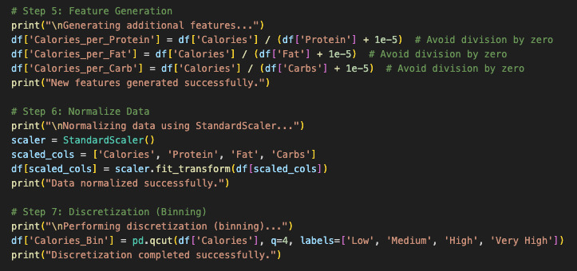

Below are snapshots of the raw and cleaned data, providing an overview of the transformation process:
Raw Data

The raw data was fetched from the USDA FoodData Central API. Initially, the dataset contained multiple inconsistencies, such as missing values, redundant columns, and unstructured nutrient information. Fetching the data involved sending requests to the API using multiple food categories like **soda, chips, cookies, candy, fast food**, etc.
The script used for fetching raw data includes API calls, pagination handling, and structured storage in a CSV format. You can view the script for fetching data from the USDA API below:
Cleaned Data

After fetching the data, it underwent extensive **cleaning and transformation** to ensure consistency and accuracy. The data cleaning process involved:
- Removing unnecessary columns such as **metadata fields**.
- Handling **missing values** by imputing or removing incomplete entries.
- Standardizing **nutrient values** for better comparability.
- Generating additional features such as **Calories per Protein, Calories per Fat, and Calories per Carb**.
- Normalizing **key features** using `StandardScaler` for consistency in visualization.
The script used for cleaning and transforming the data can be accessed below:
Data Visualization
Once the cleaned dataset was prepared, visualizations were generated to uncover insights. The visualization process included:
- Exploring **nutrient distributions** across processed and unprocessed foods.
- Analyzing **calorie compositions** in different food groups.
- Creating **scatter plots, heatmaps, bar charts, and radar charts** for data interpretation.